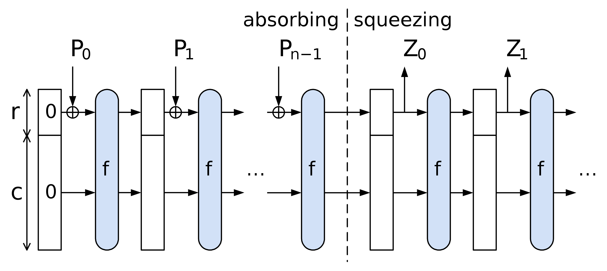

Diving into Poseidon hash and its security
The purpose of this work is to document a thorough understanding of the Poseidon hash function and its security. This document is a work in progress and will be updated as we and the community learn more about the topic.
As a forewarning, this document is a continual work in progress. Material in here is subject to change, there may be errors, and there may be things that are not fully explained. We would love to hear your feedback and suggestions for improvement and are happy to answer any questions you may have. Community engagement, open source development, and collaborative learning are core values for us, so please reach out!
Contents
- Overview
- Curriculum: Providing you with a list of relevant topics that will come up with Poseidon.
- Goals: Providing you with a list of goals that we want to achieve with this repository.
- Poseidon
- Construction: Explaining the construction of the Poseidon hash function at a high level.
- Scalar Field: Explaining how scalar (finite) fields are used in Poseidon.
- Sponge: Explaining the sponge construction used in Poseidon both intuitively and formally.
- Permutation: Explaining the permutation used in Poseidon intuitively.
- S-Boxes: Explaining the S-Boxes used in Poseidon formally and comparing to techniques used in other hashes.
- Linear Layer: Explaining the linear layer used in Poseidon formally.
- Round Constants: Explaining the round constants used in Poseidon formally.
- Security
- Linear Cryptanalysis: Explaining linear cryptanalysis and how it can be used to attack Poseidon.
- Differential Cryptanalysis: Explaining differential cryptanalysis and how it can be used to attack Poseidon.
- Algebraic Cryptanalysis: Explaining algebraic cryptanalysis and how it can be used to attack Poseidon.
- New Thoughts: Explaining new thoughts on cryptanalysis of Poseidon.
Poseidon crate
We are also developing our own hand-baked implementation of Poseidon in Rust.
This is a work in progress, but the code is located in ./poseidon and can be built via cargo build.
Purpose
To understand something well, it is often helpful to implement it yourself. Plus, we are strong believers that researchers should be able to implement their own ideas and test them out. Researchers can be builders, and builders can do research (and love math!).
Intention
The idea is to implement Poseidon in Rust and then use it to test out different ideas and attacks. The production versions of Poseidon should also be tested in their own right, but we plan to test the methodology of Poseidon and, given that, it is nice to make Poseidon less secure to demonstrate how to find collisions, find preimages, and orchestrate attacks all in one place and without it taking an unbelievable amount of time. Keep in mind, searching through the space of all possible hashes is a very large space, so even with a noticeably less secure version of Poseidon, it will still take a long time to find collisions and preimages!
Curriculum and Content
This Mdbook will present the knowledge required to understand the security assumptions of algebraic hash functions, particularly Poseidon.
Poseidon is commonely used in Zero-Knowledge (ZK) cryptography both of which require background knowledge in some mathematics. This document aims to provide a curriculum for learning the necessary mathematics to understand cryptography and its primitives. We will also provide a list of resources for learning the material.
Background
We list here some of the essential background for hash functions and cryptography.
Cryptography
Cryptography is the formal study of techniques for secure communication across insecure channels. Cryptography aims to allow two parties to communicate securely, even if an adversary can listen to all of their communications. Secure communication can be explained intuitively by the following analogy: Two parties want to send a message to one another but do not want any third party to see the message. Each party can write a message on a piece of paper, put the paper in a box, and lock the box with a padlock. The message is secure if the other party is the only one with the key to the padlock. However, sharing the key poses a problem; there are many ways to pick locks!
Proofs
The idea of mathematical proofs is the first stepping stone to understanding the implications of ZK cryptography. A proof is a string of facts (or axioms) that lead to a conclusion. For instance, we may want to prove that we own a particular online account. One way to do this would be to use this account to make a signature on a message. A signature proves that we have access to the account and are the owner. Of course, anyone with access to the account can forge a signature. Another example of a proof would be showing that an entity is a member of a particular group (not necessarily a mathematical group). For example, say an individual wants to prove they are over 21 without revealing their age or birthday or in other words that they are member of the group of people over 21.
Hash Functions
Hash functions are a fundamental primitive of cryptography. Hash functions are used for data integrity and often in combination with digital signatures. With a good hash function, even a 1-bit change in a message will produce a different hash (on average, half of the bits change). A message is hashed with digital signatures, and then the hash itself is signed. Hash functions must have the following properties if they are to be considered secure:
- Deterministic: The same input always produces the same output.
- Pre-image resistant: Given a hash, finding a message that hashes to that value is computationally infeasible. In other words, the hash is invertible.
- Collision resistant: Finding two messages that hash to the same value is computationally infeasible.
The following properties are not required for security but are desirable in specific applications:
- Efficient: The hash function should be efficient to compute.
- Fixed output size: The hash function should produce a fixed-size output.
Applications
Hash functions, serving as a one way function, play a crucial role in various applications, including:
-
Data Integrity: Hash functions ensure data integrity by generating unique hash values for different data inputs. Any alteration in the data, however minor, results in a different hash value, indicating a breach in data integrity.
-
Password Storage: Hash functions store passwords securely. Instead of storing the actual password, the hash of the password is stored in what is called the shadow file. The entered password is hashed and compared with the stored hash value when authentication is required.
-
Digital Signatures: Hash functions are integral to creating digital signatures. The data is hashed, and the hash value is encrypted using a private key to create a digital signature. This ensures the authenticity and integrity of the data.
Hash functions also play a critical role in the software engineers' toolbox. For example, a hashmap is a data structure that uses a hash function to map keys to values. This allows for efficient lookup of values given a key, which can improve the performance of algorithms and increase user experience. Another example would be a merkle tree which is often used to represents the integrity of relationships between data.
Algebraic hash functions
Algebraic hash functions are a particular class of hash functions used in ZK cryptography. Historically, most hash functions have output values that are binary strings. On the other hand, Algebraic hash functions produce values that are elements of a finite field. This allows for more efficient computation of the hash function and more efficient proving times for ZK proofs.
Mathematics
Underlying cryptography is much mathematics, and as a result, some mathematical background is essential. For example, we discuss prime numbers, factorization, and modular arithmetic. We can also build more involved structures on these, such as polynomials. We will lean towards discussing and evaluating Posiedon in the context of algebra and geometry as these views shed light on the additional structure that algebraic hash functions have and are less explored at large.
Motivation
Zero-Knowledge (ZK) has seem a lot utilization and innovation in the past few years, and is thus worth criticial examination. ZK cryptography uses a variety of cryptographic primitives to achieve its goals. These primitives are often based on new and novel mathematics. As a result, the security of these primitives is not as well understood as the security of more traditional primitives like RSA and AES. For example, we rely on the security of algebraic hash functions.
Operating on the premise that ZK will bring massive changes to the world, not just for blockchains but also for the broader technical infrastructure of the world. For example, with applications like privacy preserving machine learning, and MPC, there are boundless benifits of contributing to the security of these cryptographic primitives. However, unless these chemes are proven to be secure, they will not be useful let alone adopted.
It is our target objective to create some evidence for or against the security of algebraic hash functions. We aim are to put together a practical guide to understanding the security assumptions in algebraic hash functions and their known algebraic attacks. We will aim to cover and more deeply understand what the security assumption in Poseidon.
Poseidon
Poseidon is an example of an algebraic hash function. Succinctly, this means that the operations used in the hash involve addition and multiplication (i.e., algebraic manipulation) of elements in a finite fields as opposed to bitwise operations which are present in other hashing algorithms. Poseidon itself was introduced in the paper: Poseidon: A New Hash Function for Zero-Knowledge Proof Systems by Grassi et al.. It presents a new cryptographic hash function, Poseidon, optimized for use in practical computational integrity proof systems like SNARKs, STARKs, and Bulletproofs. The paper describes the design, implementation, and security analysis of Poseidon, highlighting its efficiency in zero-knowledge (ZK) proof systems, particularly in scenarios requiring the proving of preimage knowledge under a hash function. The authors focus on the hash function's modular framework, efficiency in large prime fields, and its comparative advantage over existing functions like SHA-256 and Pedersen Hash in terms of computational cost. Additionally, the paper details the cryptanalysis of Poseidon, emphasizing its resilience to various types of attacks, and demonstrates its practical applications in systems like Merkle trees and zero-knowledge proofs.
Reasoning
Hash functions are ubiquitous in modern computing and cryptography, see the curriculum section for more details. At a high level, hashing is an extremely important operation in computing since it provides a means of having a "random oracle" which is a function that maps input data to output data in a completely "random" way. These random oracles are not only needed in computation (e.g., for mappings and other collections, data validation, compression, etc.) but are also used implicitly to take interactive arguments and convert them into non-interactive arguments (this is Shamir's trick). The reality is that we need hash functions for a lot of things, and we need them to be fast and secure. By secure, we mean that they are hard to invert (i.e., find preimages) and hard to find collisions (i.e., find two inputs that hash to the same output). This comes down the quality of the hash function's output distribution or randomness, which is a function of the hash function's design.
The main reason why algebraic hash functions, in particular over their non-algebraic counterparts, are important today is their use in ZK proving systems. These systems rely on arithmetization. In essence, arithmetization takes a computer algorithm and rewrites it in terms of a sequence polynomial operations which we can call arithmetic circuits. Operations such as are fundamentally more expensive to arithmetize than their algebraic counterparts like addition and multiplication. This is because arithmetic circuits are built from algebraic operations over finite fields that we previously mentioned.
Reading the paper
If you decide to read the Poseidon paper Poseidon: A New Hash Function for Zero-Knowledge Proof Systems, then here are some notes to help you along the way.
Design of POSEIDON
- Architecture: Describes the unique construction of Poseidon, focusing on its efficiency and security. Security is outlined in terms of the parameters available to the designer, including the number of rounds, the size of the finite field, the algebraic properties of the S-boxes, and the sponge capacity and rate. We cover these details in the sections of this chapter.
- Comparison: Compares Poseidon with existing hash functions, highlighting its advantages.
Security Analysis
- Resilience: Discusses the cryptographic strength of Poseidon against various attack vectors.
- Cryptanalysis: Provides a detailed analysis of the hash function's resistance to common cryptographic attacks.
These are the most important sections of the paper, for us. We are very interested in the security of the hash function and its resistance to attacks since this is a fundamental tool used in present day ZK proof systems. The advantages of Poseidon are meaningless if the has function is not secure!
Implementation and Performance
- Practical Application: Details how Poseidon is implemented in systems like SNARKs and Merkle trees.
- Efficiency: Emphasizes the computational efficiency of Poseidon, especially in proving preimage knowledge.
These results highlight the practicality of Poseidon in real-world applications. If it weren't for the efficiency of Poseidon, then it would not be a good candidate for use in ZK proof systems and we could continue to use other hash functions like SHA-256.
Construction
Poseidon has a few core building blocks that are used to construct the hash function. Each of the building blocks have their own parameters, and the security of the hash function depends on the choice of these parameters. Poseidon implementations are built up by stringing these building blocks in a a flexible way, but the suggested implementations in the paper make specific choices due to their security and efficiency.
The Hades design strategy, used in the Poseidon hash function, is a cryptographic approach that optimizes the trade-off between security and efficiency. It incorporates a mix of full and partial rounds within the hash function. Full rounds apply a non-linear operation (like an S-box) to all elements of the state, offering high security. Partial rounds, on the other hand, apply this operation to only a subset of the state elements, enhancing efficiency. This combination allows for maintaining strong cryptographic security while reducing the computational overhead typically associated with full rounds in every step. This design is particularly beneficial in contexts like zero-knowledge proofs, where efficiency is crucial without compromising security. The paper highlights how the choice of the MDS matrix in HADES significantly affects security against differential and linear attacks.
Scalar Field
A scalar field in the context of is a set of elements, along with operations of addition and multiplication, that follows certain rules (like commutativity, associativity, distributivity, and the existence of additive and multiplicative identities). First, we choose a size of the finite field to work with where for some prime and some integer . Note that Poseidon actually uses a finite field that arises as the scalar field of an elliptic curve, but for simplicity we will just think of it as a finite field.
- This size will be an important security parameter for the hash function.
Unlike other hash functions, Poseidon does not require the input to be a string of bits and rather the input will be a string of elements in which we will call chunks. More on that can be found in the scalar field section.
Sponge
Like other hash algorithms, Poseidon uses the sponge construction. Sponges are a general way to read in a data stream at some rate, allow for mixing of the data within the capacity of the sponge, and then output a fixed-size hash of the data. There are two important parameters that are used to construct the sponge that have impact to the security of the hash function:
- The rate which decides how many chunks of size are "absorbed" into the sponge in each step;
- The capacity which decides how many chunks of size are stored in the sponge in each step.
The higher the rate, the faster and cheaper the hash becomes, but this makes the hash less secure, too. Intuitively, the larger the capacity, the more random state you allow yourself to store in the sponge in each step. We go deeper into the sponge and its use in general in the sponge section.
Permutation
The sponge alone will not produce a secure hash function. We also need to have the data be mixed inside the sponge in some way that is difficult to invert and reduces the chance of collisions. Poseidon uses integer powers (on selected chunks in the sponge) to permute the state. For instance, we may go through each chunk of the sponge and apply the map for (which is an example of an S-Box). We could also apply a linear transformation to the whole state of the sponge to do wider-scale mixing (which is an example of a linear layer). The particular permutation used in Poseidon is a combination of two different types of operations: S-Boxes and linear layers. We will explain these in their own sections, but for more intuition on the Poseidon permutation techniques, see the permutation section.
S-Boxes
S-Boxes are a common tool in cryptography that are used to introduce non-linearity into a system. They come in many different forms, but the S-Boxes used in Poseidon are essentially a sequence of operations that are applied to each chunk in the sponge. The S-Boxes can use different functions (e.g., or ) or be full or partial rounds. These choices all impact the security for the hash function. That is, security of the hash function from the S-Box alone depends on the choice of:
- The function used in the S-Box (i.e., the exponent of the power function);
- Number of full rounds;
- Number of partial rounds.
For details on the s-boxes, see the S-Boxes section.
Linear Layer
In order to prevent certain algebraic attacks, POSEIDON also implements another stage of mixing in the linear layer. These are essentially big matrices that are applied to all of the chunks that make up the state of the sponge (as if they are a vector). In the paper, the suggested linear layer uses Cauchy matrices. Security of the hash function from the linear layer depends on the choice of:
- The number of rounds of the linear layer;
- The choice of matrix used in the linear layer.
For more details on the linear layer, see the linear layer section.
Substitution-Permutation Networks
A Substitution-Permutation Network (SPN) is a method used in block cipher design. It involves a series of linked operations, including substitution (replacing bits with other bits) and permutation (rearranging bits). This structure is known for its effectiveness in creating confusion and diffusion, important principles in cryptography.
A Partial SPN (PSPN) differs from a full SPN in that the substitution step is not applied to all bits in each round. Instead, it substitutes only a subset of the bits, which can enhance efficiency while still maintaining a good level of security. This selective application of substitution is the key difference between PSPN and full SPN designs.
Scalar Field
Poseidon uses a scalar field from an elliptic curve which of size for some prime and some integer . These are often called finite fields or, in particular when , prime fields. When , these are called extension fields or Galois fields. Elliptic curves provide a natural way to construct scalar fields, and many modern cryptographic systems use elliptic curves.
Many ZKP systems, especially zk-SNARKs, are built around elliptic curve cryptography (ECC). Using a scalar field derived from the same elliptic curve ensures that all operations are in the same field, simplifying and optimizing computations. These come in the form of operations such as pairing computations, which are more efficiently conducted in the scalar field of an elliptic curve. Scalar fields from elliptic curves often provide more robust security properties than standard finite fields for a given field size. These properties of elliptic curves are due to the more complex structure of elliptic curves, which can increase the difficulty of specific cryptographic attacks.
For a given level of security, elliptic curves often use smaller critical sizes than algorithms based on standard finite fields. This results in better performance and smaller memory usage, which is particularly advantageous in constrained environments. Since many modern cryptographic systems use elliptic curves, designing a hash function that operates in the same domain can facilitate better interoperability between cryptographic primitives and protocols.
Mathematical Details
-
A scalar field associated with an elliptic curve is the field over which the elliptic curve is defined. In elliptic curve cryptography (ECC), these fields are typically either prime fields denoted as (where is prime) or binary fields denoted as .
-
Prime Fields ():
- In a prime field, the operations of addition, subtraction, multiplication, and division (excluding division by zero) are defined modulo a prime number .
- Elliptic curves over prime fields are defined by equations with coefficients in , which we call the scalar field.
- An example of such a curve is the secp256r1 curve.
-
Binary Fields ():
- Binary fields are a special case of finite fields of prime power order, where the prime is 2. Here, the field has elements, and the operations are performed modulo an irreducible polynomial of degree (which comes from Galois extensions).
- Elliptic curves over binary fields are particularly useful in certain cryptographic applications due to their efficient implementation in hardware and software. For instance, you can use Fast Fourier Transform (FFT) algorithms to perform multiplication in binary fields, which is more efficient than the multiplication algorithms used in prime fields.
- An example is the NIST B-283 curve.
The size of the scalar field of an elliptic curve, , indicates the number of elements in the field. The choice between prime fields and binary fields can impact the efficiency, security, and complexity of the cryptographic algorithms that use these elliptic curves.
Cryptographic Significance
The properties of the scalar field, including its size, play a crucial role in the security of ECC. They determine the complexity of the discrete logarithm problem, which is the foundation of the security in ECC-based cryptographic systems.
Poseidon Implementation
Poseidon reference implementations use various different scalar fields from different elliptic curves in order to provide flexibility and interoperability with other cryptographic primitives as well as more freedom in choosing the security parameters. Specifically, the curves are from the families:
- BN curves (Barreto-Naehrig curves)
- BLS curves (Boneh-Lynn-Shacham curves)
- ED curves (one example) (Edwards-curve Digital Signature Algorithm) The specific choice of curve is up to the user. Recall, the size of the scalar field is a security parameter for the hash function, so the choice of curve itself does not impact security so long as the size is the same!
Implementation
TODO: Add a snippet from our Poseidon crate here that shows what we are doing to get these fields.
Sponge
Sponges are used in cryptography to absorb data of any size and produce a fixed-size output. They are used in hash functions, pseudo-random number generators, stream ciphers, and authenticated encryption schemes. More can be found at this link.
Why we call it a sponge
The Sponge (State) Idea: Think of the sponge as having two action: it first absorbs input data like a sponge absorbs liquid, and subsequently this data gets squeezed to produce output data like a sponge releases liquid. In cryptographic terms, this sponge is the internal state of the hash function.
-
Absorbing Phase:
- Data such as a message, a file, or a number is divided into blocks, for instance, of a given number of bits or the size of a finite field.
- Each block of your input data is "absorbed" into the sponge where it is then mixed with the residual data (like the residual "liquid") in the sponge. The absorption and mixing process are defined concretely by the rate and capacity of the sponge respectively. This mixing process can be thought of like absorbing some new blue colored water into one chunk of the sponge and some new red in another while there is already some green soaking in the rest of the sponge. Fitting to the analogy, to truly mix these, the sponge would be allowed to sit where diffusion of the colors would occur. In the cryptographic case, we use a permutation to mix the data like diffusion can mix the colors.
-
Squeezing Phase:
- Once the sponge has absorbed all your data (or all the colored water in the analogy), it's time to get the hash output, similar to squeezing water out of the sponge.
- In the squeezing phase, part of the sponge's state is read out as the hash result. If the desired hash output is longer, the sponge might be "squeezed" multiple times, with additional transformations in between to ensure security. If it is shorter, the sponge is squeezed only once, and the output is truncated to the desired length. By squeezing the sponge, we are essentially wringing out the water, leaving us with a fixed amount of water (the hash) that is a mix of all the colors (the input data). The blue, red, and green water in our analogy now becomes a single murky brownish purplish color, which is the hash output. Could you ever get the original colors back from this let alone the order they were added in?
Why are sponges convenient?
-
Flexibility with Input Sizes:
- The sponge construction can handle input data of any size. It absorbs data block by block until all data is processed.
-
Fixed Output Size:
- The hash function produces outputs of a fixed size, regardless of the input size.
-
Security:
- The mixing and transformation processes in the sponge ensure that even a small change in the input (like adding a drop of differently colored water) leads to a completely different and unpredictable output, which is a crucial aspect of secure hash functions.
Sponge Construction
The Wikipedia: Sponge function article breaks down the sponge nicely, but it does so for sponges that absorb bits rather than elements of a finite field. From this reference and the Poseidon paper, we can outline the sponge used in Poseidon making the necessary changes in terminology and notation.
The sponge construction is defined by the following parameters:
- The size of the chunks which are the elements of the finite field ;
- The size of the state which is the number of chunks in the sponge;
- The rate which is the number of chunks absorbed in each step;
- The capacity which is the number of chunks stored in the sponge in each step;
- Note that at any given point in the process, we have .
- A function which is the permutation applied to the sponge, which for Poseidon is a combination of S-Boxes and linear layers;
- The rate can then be described via the
bits/permratio which is the number of bits in the state divided by the number of bits in the permutation.
- The rate can then be described via the
- A padding function to pad the input to the sponge to a multiple of chunks as needed.
For Poseidon in particular, we will follow this flow:
- Determine the capacity element value and the input padding if needed.
- Split the obtained input into chunks of size r.
- Apply the permutation Poseidon permuation (our above, essentially) to the capacity element and the first chunk.
- Until no more chunks are left, add them into the state and apply the permutation.
- Output output elements out of the rate part of the state. If needed, iterate the permutation more times.
Looking at this diagramatically, we have the following: 
TODO: It seems like the chunks are actually of size not from the field.
Permutation
We've seen that Poseidon uses a sponge construction to hash data, but the sponge alone is not enough to ensure security. This is a common theme in cryptography: we often need to add additional layers of complexity to ensure that our constructions are secure. Where one layer has a weakness, another layer can make up for it. The permutation is one such layer that Poseidon uses to ensure security.
Permutation is like a blender
Imagine the Poseidon permutation as a process similar to using a kitchen blender to mix ingredients together. We can think of this in the context of the sponge construction, where the permutation is applied to the sponge's state to mix the input data with the existing state.
-
Initial Setup (State Initialization):
- Think of foods and liquids inside of the blender's jar as a represention of the internal state of the hash function. When it's not blended, the ingredients are still separate and distinct, but once blended, they become a single mixture and are no longer distinguishable. The unblended mixture corresponds to the initial state in the Poseidon hash function.
- Blender Jar (Sponge Capacity):
- This blender jar effectively represents the internal state of the sponge, which is called its "capacity." This capacity includes both the part of the state that interacts with the input (like absorbing ingredients) and the part that does not.
- In cryptographic terms, the capacity is crucial for security. It's like having a larger jar that ensures even after adding and mixing ingredients, there's still space left that never directly interacts with the ingredients you add later. This 'unused space' in the jar is what guarantees the security of the hash function.
-
Adding Ingredients (Input Absorption):
- Each piece of data to be hashed is akin to adding another ingredient to the blender's jar. In Poseidon, this involves integrating the input data into the internal state.
- Amount of Food (Sponge Rate):
- The amount of food you can add at once to the blender is like the "rate" of the sponge. It's the portion of the sponge's capacity that directly interacts with the input data (or ingredients).
- In the sponge construction, you can only absorb (or add) a certain amount of data in each round, just like you can only add a certain amount of food to the blender at once without overfilling it.
-
Blending Process (Permutation Rounds):
- The heart of the POSEIDON permutation is akin to the blending process. Here, the blender goes through several rounds of blending, each round mixing the ingredients thoroughly.
- In POSEIDON, each round consists of a series of mathematical operations (like stirring, chopping, or grinding in a blender). These operations include:
- Linear Mixing: Similar to a gentle stir or a slow blend, ensuring that all parts of the mixture are evenly combined.
- Non-linear Transformation (S-Boxes): This is like a high-speed blend or pulse, creating complex interactions among the ingredients. It's where the non-linear S-boxes come into play, introducing complexity and security.
- Fixed Permutation Pattern: Just like following a specific sequence in blending (like pulse, blend, stir), POSEIDON follows a fixed pattern of mixing and transforming in each round.
- Blending/Pulsing (Permutation):
- Once you've added food to the blender (absorbed data into the rate part of the sponge), you start the blending or pulsing. This is analogous to applying the permutation in the sponge construction. This step thoroughly mixes the contents (data) with the existing state.
- The permutation (blending) ensures that the data is uniformly and complexly mixed, contributing to the hash function's security.
-
Repeating the Rounds:
- Just as some recipes call for you to "blend until smooth", POSEIDON repeats its blending (permutation) rounds a set number of times to ensure thorough mixing and security.
-
Final Product (Hash Output):
- After the final round of blending, the mixture in the blender represents the transformed state. In the context of the full sponge construction, part of this state is then 'squeezed out' to produce the hash output.
- Satisfaction and Emptying (Squeezing):
- When you're satisfied with the blending (after sufficient permutations), you pour out the mix from the blender. In the sponge construction, this is akin to the squeezing phase, where part of the state (the equivalent of the mix you pour out) is read out as the hash result.
- If your desired hash output is larger than what you can pour out in one go, you would blend again (apply another permutation) and pour out more, just like making multiple servings from a blender by blending and pouring in stages.
S-Boxes
Poseidon uses S-boxes (Substitution boxes) to apply a non-linear transformation to the input data. This non-linearity is crucial for security, as it makes the relationship between the input and output complex and difficult to reverse-engineer or predict. In particular, it strengthens the hash against linear and differential cryptanalysis.
Poseidon uses a specific type of S-boxes, which are based on integer powers of the input. This is in contrast to other S-boxes, say used in AES, which may use other types of functions like lookups, multiplicative inverses, or XOR. Poseidon typically uses integer powers of the input, such as or .
Why Non-linearity Matters
- Resisting Linear Attacks: Cryptographic algorithms need to withstand linear attacks, where an attacker tries to find linear relations (like invariant subspaces which are like generalizations of eigenvectors) in the algorithm to break it. Non-linear transformations disrupt such linear relationships.
- Diffusion: Non-linear S-boxes help in spreading the influence of a single input bit over many output bits, a property known as diffusion.
Why choose and ?
-
Non-linearity:
- Taking integer powers of numbers like , , , and are inherently non-linear.
- However, even powers (like or ) do exhibit some linear-like properties that we can see by doing:
whwere see see that the is itself linear, leading to less non-linear behavior. - Odd powers ensure a higher degree of non-linearity, which is more effective in thwarting linear and differential cryptanalysis.
-
Efficiency in Finite Fields:
- Computations like and can be very efficiently implemented in finite fields, especially those used in cryptographic applications like ZKPs.
- These operations strike a balance between providing sufficient non-linearity and being computationally feasible. One could use higher powers like or , but these would be more computationally expensive.
- ZKPs are typically built on top of polynomial schemes, so using monomials like and is a natural choice as they don't require writing complex circuits.
Invertibility
If we use a function like or in a cryptographic algorithm, we should be wary of whether it is invertible as this could lead to a vulnerability. In the field of real numbers, both and are invertible. However, when it comes to finite fields, this isn't always the case. In finite fields, the invertibility of functions like or depends on the specific properties of the field, especially its size and characteristic.
-
General Case:
- In general, for a finite field (where is a prime or a power of a prime), a function is invertible if and only if is coprime to (see this link). This is because of the properties of the multiplicative group of the finite field.
-
Specific Cases of and :
- Note that and are prime numbers, so they are always coprime to .
Other kinds of S-boxes
Substitution boxes (S-boxes) are crucial components in many cryptographic systems, used to perform non-linear transformations on input data. While S-boxes like those in the Poseidon hash function often use mathematical functions such as exponentiation in finite fields, there are various other designs and types of S-boxes used in different cryptographic algorithms. Some of these include the use of XOR operations, lookup tables, and more complex algebraic constructions.
- AES (Advanced Encryption Standard):
- AES uses a fixed S-box for its non-linear transformation step. The S-box is essentially a predefined 256-element lookup table, where each byte of input is replaced by the byte at the corresponding position in the table.
- The construction of the AES S-box is based on the multiplicative inverse in the finite field , followed by an affine transformation (which includes XOR with a constant).
Linear Layer
The linear layer is a crucial component that complements the non-linear transformations (like those performed by S-boxes).
Purpose of linear layers in hashing
-
Diffusion:
- The primary purpose of the linear layer in POSEIDON is to provide diffusion. Diffusion, as defined by Claude Shannon, is the property of spreading the influence of a single input bit over many output bits. In practical terms, this means that changing one bit of the input should change many bits of the output, making the relationship between input and output complex and hard to predict.
-
Efficiency:
- Linear transformations are generally more computationally efficient than non-linear ones. In a hash function like POSEIDON, which is optimized for use in Zero-Knowledge Proofs (ZKPs), maintaining computational efficiency is crucial.
-
Balancing Non-linearity and Linearity:
- While non-linear transformations provide security against certain types of cryptanalysis, a good cryptographic hash function also needs linear components for complete diffusion. The linear layer ensures that the changes made by the non-linear layer (S-boxes) are spread throughout the entire state. This is why it is good to use a linear layer in tandem with non-linear transformations like S-boxes.
Maximum Distance Separable Matrix
Maximum Distance Seprarable Matrices(MDS) are commonly used in the linear layer of hash functions. It's used in the linear mixing step of cipher algorithms to ensure a high level of diffusion, meaning that a change in a single input bit will affect many output bits. This contributes to the cipher's security by making it resistant to certain types of cryptanalytic attacks. MDS matrices are designed so that any subset of rows (or columns) forms a linearly independent set, maximizing the spread of input differences across the cipher's state.
The mathematical notion of linear independence refers to a set of vectors in which no vector can be represented as a linear combination of the others. This means that each vector adds a new dimension to the space spanned by the set. For example, in a three-dimensional space, three vectors are linearly independent if none of them lies in the plane formed by the other two. This concept is crucial in many areas of mathematics and is fundamental in understanding the behavior of systems of linear equations and transformations.
Cauchy Matrix
A good example of a maximum separable matrix is a Cauchy matrix, which is recommended to be used in the linear layer of Poseidon in the paper. A Cauchy matrix is a special type of matrix with elements derived from the Cauchy formula, defined by , where and are elements from two distinct sets, and for all . Cauchy matrices are known for their high determinant values and good error-correcting capabilities.
Round Constants
Round constants in hash functions, including those that use the sponge construction, serve several important purposes:
-
Symmetry Breaking: Round constants are used to break the symmetry of the state during the permutation process. Without these constants, each round would be identical, and certain patterns or structures in the input could propagate through the rounds unchanged. The constants ensure that each round is unique, preventing these patterns from surviving the hashing process.
-
Avoiding Fixed Points: A fixed point is when a certain input to the hash function results in the same output (e.g., ). Round constants help to avoid such scenarios, which could weaken the hash function's security.
-
Preventing Slide Attacks: In cryptography, a slide attack is a type of attack that takes advantage of repeating patterns within the rounds of a cryptographic algorithm. Round constants mitigate this risk by ensuring that each round of the permutation is distinct.
-
Diffusion: They contribute to the diffusion property of the hash function by ensuring that the input bits are spread across the resulting hash value, making the output look random.
-
Resisting Cryptanalysis: By carefully choosing the round constants, designers can protect against specific cryptanalytic attacks that exploit the mathematical structure of the permutation function.
Grain LSFR
Some of the most common types of round constants are linear feedback shift registers (LFSRs). Grain LFSR (Linear Feedback Shift Register) is a critical component in the Grain family of stream ciphers, which includes Grain v0, Grain v1, and Grain-128 and has been historically used to generate round constants. This family of ciphers is designed for hardware applications and aims to maintain low hardware cost. The Grain LFSR, along with a Nonlinear Feedback Shift Register (NFSR) and a nonlinear filtering function, forms the basis of these ciphers.
The LFSR in Grain provides a minimum period for the keystream, ensuring a certain level of security against attacks that exploit short periods. It operates on linear feedback principles, where the output is determined by a linear combination of previous bits in the register. This linear combination is defined by a feedback polynomial. The LFSR's role is to guarantee certain statistical properties and the non-repeating nature of the keystream.
In contrast, the NFSR, which works alongside the LFSR, introduces nonlinearity into the system. This nonlinearity is crucial for cryptographic strength, as linear systems are generally easier to attack. The NFSR's output, along with the LFSR's output, is processed through a nonlinear filtering function to produce the final keystream bit.
The specific construction and operation of the LFSR in Grain vary slightly between its different versions (v0, v1, and 128), primarily in terms of the length of the register and the feedback polynomial used. However, the underlying principle of providing a predictable, yet cryptographically secure, sequence of bits remains constant across all versions.
Importance of Round Constants
The following paper is a great resource on the importance of round constants in cryptographic algorithms
Briefly, the paper highlights the following points:
Impact of Round Constants on Security: The authors demonstrate that the round constants significantly influence a cipher's resistance to invariant attacks. They establish that the rational canonical form of the linear layer and the choice of round constants are crucial factors. Particularly, if the linear layer's invariant factors are few, round constants can be selected to ensure resistance to invariant attacks regardless of the S-box layer.
Recommendations for Selecting Round Constants: The authors suggest specific strategies for choosing round constants to maximize security. This includes analyzing the linear layer's structure and selecting constants that ensure a high degree of resistance. The paper provides mathematical methodologies and practical examples to help designers choose optimal round constants.
Algorithmic Tools for Analysis: They offer algorithmic approaches to evaluate the security of given ciphers against invariant attacks. These tools are used to analyze popular ciphers like Skinny-64, Prince, and Mantis7, demonstrating their effectiveness in proving or disproving resistance to such attacks.
Notes on Slide attacks
The slide attack is a form of cryptanalysis that targets ciphers believed to be strengthened by increasing the number of rounds. This attack renders the number of rounds in a cipher irrelevant. It focuses on analyzing and exploiting weaknesses in the cipher's key schedule, especially when keys repeat cyclically. The slide attack operates by breaking the cipher into identical permutation functions (denoted F) defined by the key schedule. The attacker collects numerous plaintext-ciphertext pairs to identify a 'slid pair', which, once found, compromises the cipher due to its vulnerability to known-plaintext attacks.
Security of Poseidon
As you have seen from our book here, the purpose of this repository is to document a thorough understanding of the Poseidon hash function and its security. Let's make sure we understand why this matters.
Security of Hash Functions
The security of hash functions is a cornerstone in the field of cryptography. Secure hash functions are essential for a variety of applications, from securing passwords to ensuring data integrity and enabling complex cryptographic protocols. Here, we discuss what it means for hash functions to be secure and why these properties are crucial.
What Makes a Hash Function Secure?
A secure hash function is designed to satisfy several important properties:
Preimage Resistance
- Definition: Given a hash output , it should be computationally infeasible to find any input such that . We refer to as a preimage of and we refer to this property as preimage resistance.
- Preimage resistance ensures that even if a hash value is known, the original data cannot be derived from it, protecting against reverse-engineering. This is part of the one-way nature of hash functions.
Second Preimage Resistance
- Definition: Given an input , it should be computationally infeasible to find a different input such that .
- Second preimage resistance property is vital for data integrity, ensuring that the input data cannot be tampered with without changing the hash.
Collision Resistance
- Definition: It should be computationally infeasible to find any two distinct inputs and such that .
- Collision resistance is crucial for cryptographic applications like digital signatures, where unique hash values are necessary to prevent fraud.
Quick note
When comparing second preimage and collision resistance, I (Colin) found it helpful to think of second preimage resistance as a more robust version of collision resistance as the two seem very similar otherwise. Second, preimage resistance is the property that, given a specific input, makes it hard to find another input that hashes to the same value. In contrast, collision resistance is the property that makes it hard to find any two inputs that hash to the same value. Your search space is confined in the second preimage resistance since you have one fixed input, but in collision resistance, you can search over all possible inputs and keep track of which ones you have already tried and their hashes.
Why Do These Security Properties Matter?
The security properties of hash functions have direct implications for their practical use:
-
Data Integrity
- Secure hashes are used to verify data integrity in transmission and storage. Any tampering with the data would result in a different hash value, alerting the system to potential corruption.
-
Authentication
- Hash functions, in combination with digital signatures, authenticate the origin and verify the integrity of messages, preventing impersonation and forgery.
-
Password Security
- Hashing passwords before storing them ensures that even if the hash is compromised, the original password remains protected due to pre-image resistance.
-
Blockchain and Cryptocurrencies
- In blockchain technology, secure hash functions underpin the integrity of the ledger, with each block being linked to the previous one through hashes, creating a tamper-evident chain.
Current state of Poseidon security
There of course has been some existing formal analysis of the security of Poseidon. Some of th
Algebraic Hash Cryptanalysis
Algebraic attacks on cryptographic hash functions involve exploiting the algebraic properties and structures within the hash function. These attacks may attempt to solve equations that describe the hash function's behavior or find vulnerabilities in its algebraic representation. The Poseidon hash function's design and analysis likely include considerations to mitigate such attacks, but the exact methodologies and conclusions drawn in the paper are not accessible in this context.
Interpolation Attack
This attack attempts to construct an interpolation polynomial that accurately describes the hash function. If the number of unknown monomials in the polynomial is sufficiently large, constructing it becomes as hard as a brute-force attack. For Poseidon, the security against this type of attack is related to the number of different monomials in the interpolation polynomial, which depends on the degree of the function.
The mathematical intuition behind this attack is that a higher number of rounds generally increases the complexity of the interpolation polynomial, making it more difficult for an attacker to construct or exploit it accurately. The parameters of the Poseidon hash function, including the size of the finite field (denoted by p), the number of S-boxes applied per round, and the algebraic properties of these S-boxes, directly influence the number of different monomials in the interpolation polynomial.
The number of rounds required to prevent this attack, denoted by the sum of partial and full rounds is bound by
Linear Cryptanalysis
Invarient subspace attack
An invariant subspace attack on a cryptographic hash function, like Poseidon, involves finding a subset of the input space that maps to itself or another invariant set under the hash function's transformations. Mathematically, if is in this subset, then , where is the hash function, is also in this subset. The attacker exploits this invariance to predict outputs or find collisions. The effectiveness of such attacks depends on the hash function's specific design and mathematical properties, including its non-linear and linear components.
Linear Cryptanalysis
A linear attack on a cryptographic hash function involves finding a linear relationship between the input and output bits. Attackers exploit these linear approximations to predict the hash output, which could compromise the hash function's security. In the Poseidon hash function context, the paper analyzes its resilience to linear attacks by examining its structure and transformations. The mathematical intuition behind this analysis focuses on the degree of linearity in the hash function's operations. The more non-linear the function, the less susceptible it is to linear attacks, enhancing its security.
Differential Cryptanalysis
Differential cryptanalysis is a method of cryptanalysis that exploits the characteristics of differential probabilities to break a cipher. It is a general form of cryptanalysis that can be applied to many ciphers, including block ciphers, stream ciphers, and hash functions. The attack involves finding a difference between two plaintexts, resulting in a specific difference in the ciphertexts. The attacker then uses this information to recover the secret key. This attack is particularly effective against block ciphers that use a substitution-permutation network (SPN) structure.
The probability of successful differential attacks on Poseidon is determined by analyzing the number of active S-boxes in its structure. Poseidon is designed with a certain number of rounds, each involving substitution (S-boxes) and permutation steps. The security against differential attacks is higher when more active S-boxes are involved, as this increases the complexity and reduces the probability of finding exploitable differential patterns. The mathematical intuition hinges on the observation that each active S-box significantly reduces the likelihood of a successful differential attack by increasing the nonlinearity and complexity of the transformation.
Algebraic Cryptanalysis
Gröbner Basis Attack
A Gröbner basis is a particular kind of generating set of a polynomial ideal in multivariate polynomial rings. It has properties that make the solution of polynomial systems simpler and more efficient. A Gröbner basis for an ideal is a set of polynomials from which one can derive the same solutions to the polynomial system as from the original set of polynomials, but with more straightforward computation, particularly for solving systems of equations and testing ideal membership.
The paper outlines three steps regarding the attack:
Polynomial Modeling
The first step to performing a Gröbner basis attack is to model the hash function as a system of polynomial equations. This involves expressing each step of the hash function (like the S-boxes and linear layers) in polynomial form. Then, using a chosen monomial order (such as degrevlex), a Gröbner basis algorithm like Buchberger's algorithm or F4/F5 algorithms is applied to these polynomial equations. The process iteratively refines the initial set of equations into a Gröbner basis, which simplifies the system and makes it easier to analyze algebraically.
Gröbner Basis Computation
The next step is to compute a Gröbner basis for the ideal spanned by the list of polynomials, typically using a degree-refining term order such as degrevlex.
Degrevlex Order
The "degrevlex" order, short for "degree reverse lexicographic order," is a specific type of monomial ordering used in computational algebra, particularly in the computation of Gröbner bases. In this ordering, monomials are first compared by their total degree, with lower degree monomials being considered smaller. If two monomials have the same total degree, a reverse lexicographic order is applied, which means the monomials are compared based on the powers of their variables, starting from the last variable and moving backwards. This order is commonly used due to its computational efficiency in Gröbner basis calculations.
Term Order Change
The process of converting from a degrevlex to a lexicographical order in a Gröbner basis involves a sequence of computational steps. These steps reorient the basis from a degree-based prioritization (degrevlex) to one where variables are considered in a strict order (lexicographical). This reordering aligns the basis with the natural order of variables, which can be essential for solving systems of equations or performing further algebraic manipulations.
Computing the solution
The last step in a Gröbner basis attack typically involves solving the system of equations represented by the Gröbner basis to find the hash function's pre-image or collision. The Euclidean algorithm and polynomial factorization are used to simplify and solve these equations.
I think this is the best resource on Gröbner bases attacks
New Thoughts
Dynamical Systems
Discrete dynamical systems typically study sequences of continuous transformations applied to sets. For instance, you will see a lot of dynamical systems written as: One of the hallmarks of dynamical systems is that they are often chaotic.
Even the simplest dynamical systems can exhibit chaotic behavior. We often see beautiful fractals and other interesting patterns emerge from periodic, quasiperiodic, ergodic, and chaotic dynamical systems. Take for example the classical system called the logistic map which has the governing equation: This system is often studied due to its simplicity in construction, but the presence of chaotic behavior.
Chaos is often defined as sensitive dependence on initial conditions. In this sense, a chaotic system can seemingly behave randomly, but is actually deterministic. This feels quite similar to the idea of a hash function.

In the figure above, we track the path of two different starting points and . Their trajectories are seemingly random and uncorrelated due to choosing such a large value of , but they are actually deterministic and governed by the same equation.
Ergodicity
Ergodicity is a property of dynamical systems that essentially means that the system explore the space of possible states with equal probability over time. Intuitively, its as if an ergodic transformation is a transformation that "mixes" or "stirs" the space of possible states in a way that is uniform.
The simplest example of an ergodic transformation is a rotation of the circle by some irrational angle (meaning not a fraction of ) (in radians). If we continuously apply the map: then we get a system that is ergodic. We will continuously explore the entire circle with equal probability over long enough periods of times (iterations).
Attacking Poseidon with a Neural Network
How would this work?
Questions
- Dynamical systems typically works over the reals , but Poseidon works over a finite field . How does this change things? Is there a way to think about Poseidon as a dynamical system over that is meaningful? Even just focusing on the S-boxes, can we think of them as dynamical systems over in a way that shows these are close to, or are, "chaotic"?
- Also related was the notion of ergodicity. Can we think of Poseidon as an ergodic transformation over ? What does this mean? Is this meaningful? What does this tell us about the security of Poseidon?
- Does thinking about Poseidon as a dynamical system help us understand the security of the hash function? For instance, if we could show that Poseidon is not ergodic and not chaotic, would this show a reduced security metric for the hash function? Or is this not meaningful? On the other hand, if we could show that Poseidon is ergodic and chaotic, would this be validation of the current security metrics? Or is this not meaningful?
Resources
Throughout our research, we have found many resources that have helped us understand the concepts behind Poseidon and the field of symmetric cryptography. We have compiled a list of these resources here, and we hope that they will be useful to you as well.
Papers and books
Books
Silverman, J. H., Pipher, J., & Hoffstein, J. (2008). An introduction to mathematical cryptography (Vol. 1). Springer New York. "An Introduction to Mathematical Cryptography" by Hoffstein, Pipher, and Silverman is a highly valuable resource for those seeking a deep understanding of the mathematical principles in cryptography. Its thorough coverage of both classical and modern cryptographic techniques, combined with a clear explanation of underlying mathematical concepts, makes it great introductory matterial. The book strikes a balance between theory and practice, offering insights into the practical applications of the discussed mathematical methods. Its comprehensive approach ensures that readers gain a solid foundation in cryptographic principles.
Rosulek, M. (n.d.). The Joy of Cryptography. "The Joy of Cryptography" is an accessible, undergraduate-level textbook that provides a comprehensive introduction to the principles of modern cryptography. The author, Mike Rosulek, emphasizes a deep understanding of the subject, focusing on provable security aspects and offering insight into how cryptographic protocols are constructed to resist various attacks. The book is known for its clear explanations and practical examples, making complex concepts approachable. It's particularly useful for students and practitioners who wish to gain a solid grounding in cryptography without getting overwhelmed by overly technical details.
Papers
Gabizon, A., Williamson, Z. J., & Ciobotaru, O. (2019). Plonk: Permutations over lagrange-bases for oecumenical noninteractive arguments of knowledge. Cryptology ePrint Archive. "PlonK: Permutations over Lagrange-bases for Oecumenical Noninteractive arguments of Knowledge" by Ariel Gabizon, Zachary J. Williamson, and Oana Ciobotaru, focuses on enhancing zk-SNARK constructions, specifically addressing the efficiency of proof construction and verification. It presents a universal SNARK with fully succinct verification and significantly reduced prover running time. The paper emphasizes improvements in arithmetization, utilizing permutations over univariate evaluations on a multiplicative subgroup. This approach offers a more direct and efficient verification process compared to previous models like Sonic, making it practical for a wider range of real-world applications in cryptography.
Grassi, L., Khovratovich, D., Rechberger, C., Roy, A., & Schofnegger, M. POSEIDON: A New Hash Function for Zero-Knowledge Proof Systems (Updated Version). "POSEIDON: A New Hash Function for Zero-Knowledge Proof Systems" by Grassi, Khovratovich, Rechberger, Roy, and Schofnegger, presents a modular framework for cryptographic hash functions optimized for zero-knowledge proof systems like SNARKs and STARKs. It introduces the POSEIDON hash function, designed to work efficiently with large prime fields and aims to be more constraint-efficient than existing hash functions like Pedersen Hash. The paper details the security analysis of POSEIDON, its applications in various cryptographic systems, and comparisons with other hash functions.
Sauer, J. F., & Szepieniec, A. (2021). Sok: Gröbner basis algorithms for arithmetization oriented ciphers. Cryptology ePrint Archive. "SoK: Gröbner Basis Algorithms for Arithmetization Oriented Ciphers" by Jan Ferdinand Sauer and Alan Szepieniec provides an in-depth study of Gröbner basis algorithms in the context of arithmetization-oriented ciphers. It surveys key algorithms, emphasizing their intuitive understanding and complexity analysis, aiding in assessing the security of these ciphers. In my opinion, this is the best resource on Gröbner bases attacks.
Guido, B., Joan, D., Michaël, P., & Gilles, V. A. (2011). Cryptographic sponge functions. "Cryptographic Sponge Functions" offers an extensive exploration of sponge functions in cryptography. It details their fundamentals, applications, and security aspects. The document is notable for its thorough coverage, practical application discussions, security analysis, and accessibility to readers with basic cryptography knowledge. It's a valuable resource for understanding the role of sponge functions in cryptographic systems, catering to both theoreticians and practitioners in the field.
Beierle, C., Canteaut, A., Leander, G., & Rotella, Y. (2017, July). Proving resistance against invariant attacks: How to choose the round constants. In Annual International Cryptology Conference (pp. 647-678). Cham: Springer International Publishing. "Proving Resistance against Invariant Attacks: How to Choose the Round Constants," focuses on the resistance of lightweight block ciphers against invariant attacks, specifically addressing the selection of round constants in cipher design. It provides a detailed analysis of how the linear layer and round constants influence resistance to such attacks, using examples like Prince, Skinny-64, and Mantis7. The authors propose a framework to analyze and prove resistance, emphasizing the mathematical properties critical for ensuring security against invariant attacks. They also offer practical guidelines for choosing round constants and analyze various ciphers' resistance levels.
Zhang, H., & Wang, X. (2009). Cryptanalysis of stream cipher grain family. Cryptology ePrint Archive. "Cryptanalysis of Stream Cipher Grain Family," examines vulnerabilities in the Grain family of stream ciphers, including Grain v0, Grain v1, and Grain-128. The authors present a distinguishing attack against weak Key-IV (Initialisation Vector) combinations in these ciphers, using the second Walsh spectra of nonlinear functions to identify weak Key-IV pairs. They demonstrate that these weak Key-IVs can be distinguished with relatively few keystream bits and moderate computational effort. Additionally, they apply algebraic attacks to recover the secret key for these weak Key-IVs efficiently. The paper highlights significant security concerns in the Grain family, particularly in the context of weak Key-IV pairs, and suggests improvements for their cryptographic robustness.
Blogs and Code
Blogs
Khovratovich, D., Aumasson, J. P., Quine, P., & Mennink, B. (n.d.). SAFE (Sponge API for Field Elements) – A Toolbox for ZK Hash Applications. HackMD. The authors define a unified Sponge API for Field Elements (SAFE), which provides ZK proof systems designers with a secure and efficient framework for hashing, encryption, and applications thereof (commitment schemes, Fiat-Shamir transforms, AEAD, and so on). The authors do not restrict the permutation algorithm nor the field type, thus SAFE can be instantiated with established constructions. The API supports various permutations and applications like hashing, Fiat-Shamir transforms, and authenticated encryption, but excludes variable-length hashing due to complexity and performance issues.
Fichtner, J. (2021, June 28). Gröbner Basis-Attacking a Tiny Sponge. I personally recommend this blog post by Jannik Fichtner, which provides a detailed explanation of Gröbner basis attacks on the Poseidon hash function. The blog at large covers advanced topics in cryptography and mathematics, focusing on areas like Gröbner bases, sponge functions, and Hilbert regularity. The posts delve into technical aspects and provide insightful analyses, often exploring the intersection between theoretical concepts and practical cryptographic applications.
Code
lurk-lab. (2023). Neptune: Rust Poseidon implementation. GitHub. This is a well done production implementation of Poseidon in Rust. We initially really wanted to try to attack this implementation however neptune doesn't support field sizes smaller than 32bits and we wanted to start with a smaller field size.
ingonyama-zk. (2023). Poseidon-hash: Reference implementation in Python of Poseidon and optimized Poseidon (Neptune) hash functions. GitHub. This refrerence implementation of Poseidon in Python is a great resource for understanding the algorithms involved in Poseidon. The repository is well documented and easy to follow. It has a good test sweet and proves to be a gentle introduction to understanding the Poseidon hash function.
arnaucube. (2023). Poseidon-rs: Poseidon hash function. GitHub. This is another implementation of Poseidon in Rust. While it is less documented it is incredibly simple making it a really good place to start with rust. The whole implementation is contained in 2 small files.
Videos and talks
This was an excellent lecture by Swastik Kopparty through the simmons institute